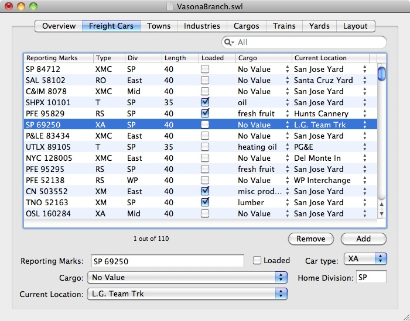

 The Freight Car tab lets you add new freight cars and edit details about existing freight cars. You'll describe the car - the car number, its current cargo, its current location, and what kind of freight car it is - here. To change information on a freight car, select that car from the list, and edit in the fields at the bottom of the screen.
To add a new freight car, press the "Add" button and provide the named fields. To remove an existing freight car, select it and press the "Remove" button.
Each freight car is associated with six pieces of information: its reporting marks, whether the car is loaded or empty, the type of freight car, the current cargo being carried, its current location, and the freight car's "home division" for deciding when the car can be used for a freight car load or for directing the car when empty. You can change any of these fields directly either by selecting or typing a new value.
The reporting marks are the initials and numbers on the freight car itself, and will tell your operators which car to move.
The Cargo tab shows what the car is currently carrying. Although the tab itself only shows the name of the cargo, you can hover over it without pressing the mouse and see the full description - source and destinations, number of carloads per week, etc.
The car type says what kind of freight car it is. You can use standard AAR car type codes, or define your own in the Layout tab.
The current location names where the freight car was last seen. It may currently be on a train, but will stay with the old location until the train finishes its work.
The Home Division is used to identify whether a car should be used for a given cargo and industry, and where an empty car should be returned. When choosing a car to carry a particular load, only freight cars whose home division matches the division of the source or destination industry will be chosen. If a freight car has no cargo, it will be returned to a yard with the same division.
See Also:
Detail: Importing Lists of Freight Cars from Other Programs to learn how to import freight cars from another program or from an existing spreadsheet.
Detail: Divisions for cars and industries for more details on how a freight car's "Home Division" affects the assigning of cars to cargos.
{kind=link}